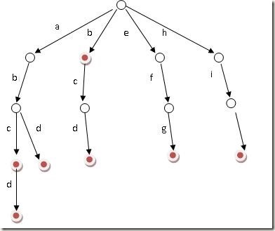

前缀树概念
假设有b，abc，abd，bcd，abcd，efg，hii
这6个单词,那我们创建trie树就得到

img
题目
中等
Trie 前缀树
是一种树形数据结构，用于高效地存储和检索字符串数据集中的键。这一数据结构有相当多的应用情景，例如自动补完和拼写检查。
请你实现 Trie 类：
Trie() 初始化前缀树对象。void insert(String word) 向前缀树中插入字符串
word 。boolean search(String word) 如果字符串
word 在前缀树中，返回
true（即，在检索之前已经插入）；否则，返回
false 。boolean startsWith(String prefix)
如果之前已经插入的字符串 word 的前缀之一为
prefix ，返回 true ；否则，返回
false 。
示例：
1 2 3 4 5 6 7 8 9 10 11 12 13 14 输入 ["Trie", "insert", "search", "search", "startsWith", "insert", "search"] [[], ["apple"], ["apple"], ["app"], ["app"], ["app"], ["app"]] 输出 [null, null, true, false, true, null, true] 解释 Trie trie = new Trie(); trie.insert("apple"); trie.search("apple"); // 返回 True trie.search("app"); // 返回 False trie.startsWith("app"); // 返回 True trie.insert("app"); trie.search("app"); // 返回 True
n叉树
本题只涉及26个字母，所以我们的字典树（前缀树），只搞长度26即可。
有点类似DFA的思路，每个字符算一个状态，然后后面有26钟状态可选。
1 2 3 4 5 6 7 8 9 10 11 12 13 14 15 16 17 18 19 20 21 22 23 24 25 26 27 28 29 30 31 32 33 34 35 36 37 38 39 40 41 42 43 44 45 46 47 48 49 50 51 52 53 54 55 56 57 58 59 60 61 62 63 64 class Trie { Trie[] children; boolean isEnd; public Trie () { isEnd = false ; children = new Trie [26 ]; } public void insert (String word) { int n = word.length(); Trie cur = this ; for (int i = 0 ; i < n; i++){ if (cur.children[word.charAt(i) - 'a' ] == null ){ cur.children[word.charAt(i) - 'a' ] = new Trie (); } cur = cur.children[word.charAt(i) - 'a' ]; } cur.isEnd = true ; } public boolean search (String word) { int n = word.length(); Trie cur = this ; if (cur == null ){ return false ; } for (int i = 0 ; i < n; i++){ char c = word.charAt(i); if (cur.children[c - 'a' ] == null ){ return false ; } cur = cur.children[c - 'a' ]; } if (!cur.isEnd){ return false ; } return true ; } public boolean startsWith (String prefix) { int n = prefix.length(); Trie cur = this ; if (cur == null ){ return false ; } for (int i = 0 ; i < n; i++){ char c = prefix.charAt(i); if (cur.children[c - 'a' ] == null ){ return false ; } cur = cur.children[c - 'a' ]; } return true ; } }
给你一个产品数组 products 和一个字符串
searchWord ，products
数组中每个产品都是一个字符串。
请你设计一个推荐系统，在依次输入单词 searchWord
的每一个字母后，推荐 products 数组中前缀与
searchWord
相同的最多三个产品。如果前缀相同的可推荐产品超过三个，请按字典序返回最小的三个。
请你以二维列表的形式，返回在输入 searchWord
每个字母后相应的推荐产品的列表。
示例 1：
1 2 3 4 5 6 7 8 9 10 11 输入：products = ["mobile","mouse","moneypot","monitor","mousepad"], searchWord = "mouse" 输出：[ ["mobile","moneypot","monitor"], ["mobile","moneypot","monitor"], ["mouse","mousepad"], ["mouse","mousepad"], ["mouse","mousepad"] ] 解释：按字典序排序后的产品列表是 ["mobile","moneypot","monitor","mouse","mousepad"] 输入 m 和 mo，由于所有产品的前缀都相同，所以系统返回字典序最小的三个产品 ["mobile","moneypot","monitor"] 输入 mou， mous 和 mouse 后系统都返回 ["mouse","mousepad"]
字典树+排序
排序是因为需要取字典序最小的前三条，可以事先对products数组进行排序，这样添加到字典树之后，也是有序的。
本题只需字典树，不需要借助前缀树的isEnd字段了，没啥用。
但是每个字典树需要维护一个集合，这个集合存的元素都是包含当前前缀的产品集合。方便取值
1 2 3 4 5 6 7 8 9 10 11 12 13 14 15 16 17 18 19 20 21 22 23 24 25 26 27 28 29 30 31 32 33 34 35 36 37 38 39 40 41 42 43 44 45 46 47 48 49 50 51 52 class Solution { TrieNode root = new TrieNode (); public List<List<String>> suggestedProducts (String[] products, String searchWord) { Arrays.sort(products); List<List<String>> ans = new ArrayList <>(); for (String s : products) insert(s); for (int i = 0 ; i < searchWord.length(); i++){ ans.add(new ArrayList ()); } search(searchWord, ans); return ans; } private void insert (String s) { TrieNode cur = root; for (char c : s.toCharArray()){ if (cur.children[c - 'a' ] == null ){ cur.children[c - 'a' ] = new TrieNode (); } cur = cur.children[c - 'a' ]; cur.list.add(s); } } private void search (String word, List<List<String>> ans) { TrieNode cur = root; for (int i = 0 ; i < word.length(); i++){ char c = word.charAt(i); if (cur.children[c-'a' ]==null ) return ; cur = cur.children[c-'a' ]; for (int j = 0 ; j < Math.min(3 , cur.list.size()); j++){ ans.get(i).add(cur.list.get(j)); } } } class TrieNode { TrieNode[] children; List<String> list; TrieNode(){ children = new TrieNode [26 ]; list = new ArrayList <>(); } } }
请你设计一个数据结构，支持 添加新单词 和
查找字符串是否与任何先前添加的字符串匹配 。
实现词典类 WordDictionary ：
WordDictionary() 初始化词典对象void addWord(word) 将 word
添加到数据结构中，之后可以对它进行匹配bool search(word) 如果数据结构中存在字符串与
word 匹配，则返回 true ；否则，返回
false 。word 中可能包含一些 '.'
，每个 . 都可以表示任何一个字母。
示例：
1 2 3 4 5 6 7 8 9 10 11 12 13 14 15 输入： ["WordDictionary","addWord","addWord","addWord","search","search","search","search"] [[],["bad"],["dad"],["mad"],["pad"],["bad"],[".ad"],["b.."]] 输出： [null,null,null,null,false,true,true,true] 解释： WordDictionary wordDictionary = new WordDictionary(); wordDictionary.addWord("bad"); wordDictionary.addWord("dad"); wordDictionary.addWord("mad"); wordDictionary.search("pad"); // 返回 False wordDictionary.search("bad"); // 返回 True wordDictionary.search(".ad"); // 返回 True wordDictionary.search("b.."); // 返回 True
构建前缀树 + DFS
1 2 3 4 5 6 7 8 9 10 11 12 13 14 15 16 17 18 19 20 21 22 23 24 25 26 27 28 29 30 31 32 33 34 35 36 37 38 39 40 41 42 43 44 45 46 47 48 49 50 51 52 53 54 55 56 57 58 59 60 61 62 63 64 65 66 67 68 69 70 71 72 73 class WordDictionary { Trie root; public WordDictionary () { root = new Trie (); } public void addWord (String word) { root.insert(word); } public boolean search (String word) { return dfs(word, 0 , root); } private boolean dfs (String word, int idx, Trie root) { if (word.length() == idx){ return root.isEnd; } Trie[] children = root.getChildren(); char c = word.charAt(idx); if (c != '.' ){ if (children[c - 'a' ] != null ){ return dfs(word, idx + 1 , children[c - 'a' ]); } }else { for (int i = 0 ; i < 26 ; i++) { if (children[i] != null ){ boolean b = dfs(word, idx + 1 , children[i]); if (b){ return b; } } } } return false ; } } class Trie { Trie[] children; boolean isEnd; public Trie () { children = new Trie [26 ]; isEnd = false ; } public void insert (String word) { int n = word.length(); Trie cur = this ; for (int i = 0 ; i < n; i++){ if (cur.children[word.charAt(i) - 'a' ] == null ){ cur.children[word.charAt(i) - 'a' ] = new Trie (); } cur = cur.children[word.charAt(i) - 'a' ]; } cur.isEnd = true ; } public Trie[] getChildren() { return children; } }
困难
给定一个 m x n 二维字符网格 board
和一个单词（字符串）列表 words，
返回所有二维网格上的单词 。
单词必须按照字母顺序，通过 相邻的单元格
内的字母构成，其中“相邻”单元格是那些水平相邻或垂直相邻的单元格。同一个单元格内的字母在一个单词中不允许被重复使用。
示例 1：
img
1 2 输入：board = [["o","a","a","n"],["e","t","a","e"],["i","h","k","r"],["i","f","l","v"]], words = ["oath","pea","eat","rain"] 输出：["eat","oath"]
示例 2：
img
1 2 输入：board = [["a","b"],["c","d"]], words = ["abcb"] 输出：[]
字典树 + DFS + 回溯
1 2 3 4 5 6 7 8 9 10 11 12 13 14 15 16 17 18 19 20 21 22 23 24 25 26 27 28 29 30 31 32 33 34 35 36 37 38 39 40 41 42 43 44 45 46 47 48 49 50 51 52 53 54 55 56 57 58 59 60 61 62 63 64 65 66 class Solution { int [][] dirs = {{1 , 0 }, {-1 , 0 }, {0 , 1 }, {0 , -1 }}; public List<String> findWords (char [][] board, String[] words) { Trie trie = new Trie (); for (String word : words) { trie.insert(word); } Set<String> ans = new HashSet <>(); for (int i = 0 ; i < board.length; i++) { for (int j = 0 ; j < board[0 ].length; j++) { dfs(ans, trie, i, j, board); } } return new ArrayList <>(ans); } private void dfs (Set<String> ans, Trie trie, int i, int j, char [][] board) { if (!trie.children.containsKey(board[i][j])){ return ; } char c = board[i][j]; trie = trie.children.get(c); if (!"" .equals(trie.word)) { ans.add(trie.word); } board[i][j] = '#' ; for (int [] dir : dirs) { int i1 = i + dir[0 ]; int j1 = j + dir[1 ]; if (i1 >= 0 && i1 < board.length && j1 >= 0 && j1 < board[0 ].length){ dfs(ans, trie, i1, j1, board); } } board[i][j] = c; } } class Trie { String word; Map<Character, Trie> children; boolean isWord; public Trie () { this .word = "" ; this .children = new HashMap <Character, Trie>(); } public void insert (String word) { Trie cur = this ; for (int i = 0 ; i < word.length(); ++i) { char c = word.charAt(i); if (!cur.children.containsKey(c)) { cur.children.put(c, new Trie ()); } cur = cur.children.get(c); } cur.word = word; } }